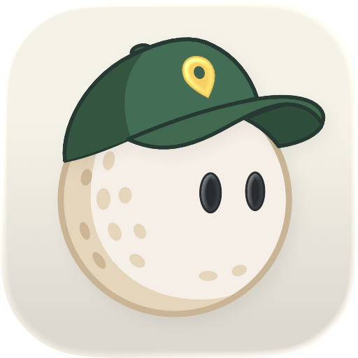

Albie
Your little golf companion. A place for every shot.
Install AlbieUpdating build 9–13? Install this update without deleting the app. Your profile, active round and saved history remain compatible.
Build 8 or earlier? These older builds lack the saved-history field introduced in build 9. Preserve the old installation if you need its test data; deleting and reinstalling removes its local profile and test round.
Version 1.0 · Build 14 · iOS / iPadOS 26.2 or later
Ready for your first tee?
- Open this page in Safari on your registered iPhone or iPad.
- Tap Install Albie and confirm the installation.
- Return to your Home Screen and open Albie.
Build 14 refines the scorecard with edge-to-edge cell fills, clearer totals and tighter spacing, plus more breathing room inside the table’s top and bottom edges. Scores and saved round data are unchanged. Includes Albie’s traditional scorecard, large-text summaries, profile editing, shot logging and full history.
Installation is limited to registered devices. If it doesn’t finish, check the required iOS version and ask the person who shared this page to check your device registration.
This build’s provisioning profile expires August 20, 2027.